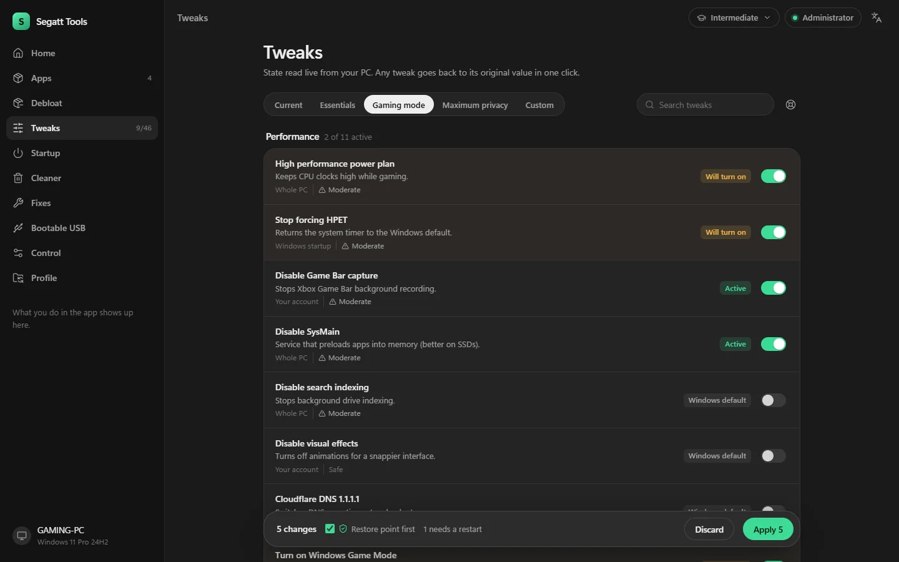

47 tweaks, tuned to your hardware
Privacy, performance, interface, system and services, alone or in presets: Essentials, Gaming and Maximum privacy.
- Each one labelled Safe, Moderate or Risky, with what you may notice
- A laptop never gets the power settings meant for a desktop
- Pick Beginner, Intermediate or Advanced and see only what fits
